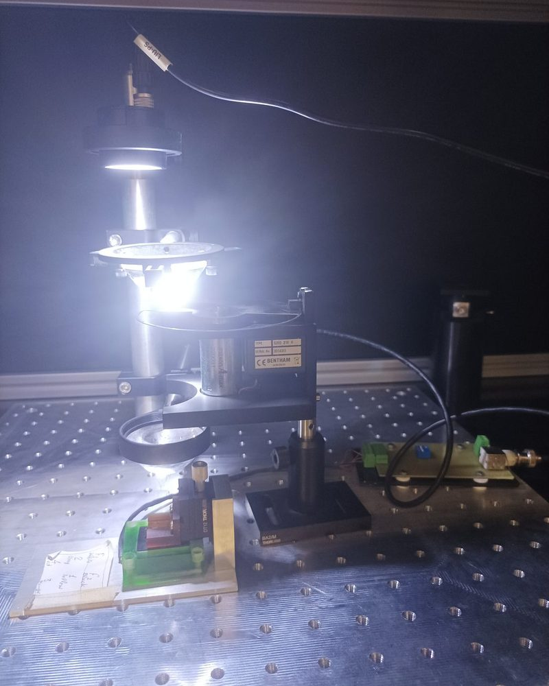
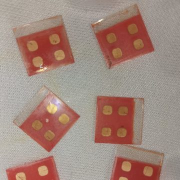
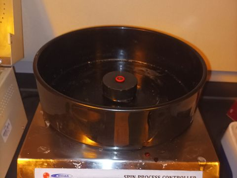
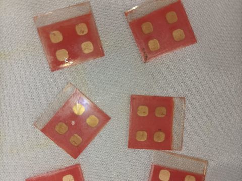
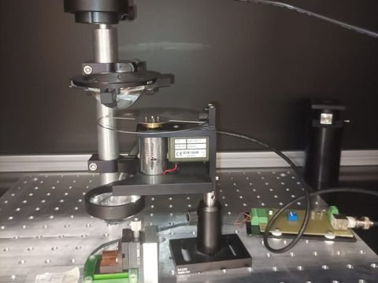

Tahir
Sajjad Butt
Experimental physicist: device physics & optoelectronics
I build devices and measure how they respond. At the FMOD Lab, LUMS, that meant fabricating thin-film photodetectors and tracking their photocurrent in time to see how structure and interfaces decide where charge goes. Next, I want to bring that bench experience to device physics, optoelectronics, quantum materials and energy storage.
Two peer-reviewed papers (2025), with device fabrication and photocurrent measurement on both · M.S. Physics, LUMS · Now teaching physics and STEM at SAGE and IB Prep Academy
DEVICE PHYSICS · OPTOELECTRONICS · QUANTUM MATERIALS · ENERGY STORAGE · TRANSIENT PHOTOCURRENT


Finished devicesWhere I want to take this
My hands-on work so far is in thin-film devices. For a Ph.D., I am looking at four areas where the same skills (making a device, then measuring how charge moves through it) carry over.
What sets a device’s response
How charge is generated, separated and collected in a working device, and what limits how fast it responds. My rise-time and grain-size results are both questions of this kind.
Light in, current out
Photodetectors, light–matter interaction and excitons. I have built and tested optoelectronic devices and want to understand the physics behind their behavior in more depth.
Electrons that act collectively
Materials whose properties come from quantum effects. Condensed matter and quantum information coursework, plus my QKD project, pulled me this way. I would study them through transport and optical measurements.
Batteries and their interfaces
Charge and ion transport in battery materials and at electrode interfaces. Thin-film fabrication and time-resolved electrical measurement transfer directly to this problem.
Build the device, then measure it
Each project below started with films or devices I helped make and ended with characterizing them. The common question is how structure, and in a device its interfaces, controls the electrical and optical response. Each project opens in a new tab.
Polymer photodetectors: covalent donor–acceptor bridging and photoresponse speed
Fabricated and characterized mesoscopic P3HT, P3HT–PDI-PH and PTh-PDI-DCP photodetectors. The covalent D–A conjugate gave a 37% faster rise time than P3HT. The speed-up did not carry over to fall times. Our reading is that the covalent link speeds up charge injection into the TiO₂.
Lead-free MA3Bi2I9 perovskite: anti-solvent engineering and photodetector performance
With the lab team, tuned MBI grain size ≈26× via chlorobenzene concentration; independently fabricated the photodetectors and measured their response. Devices made with 60 µL·cm⁻² of anti-solvent gave the highest peak photocurrent (≈7 µA·cm⁻²) and the fastest rise time (0.35 s).
MgO thin films by pulsed laser deposition: repetition rate and film growth
Operated a Nd:YAG pulsed laser deposition system to grow MgO films on silicon at four repetition rates. Thickness rose from 307 to 960 nm while crystallite size fell from 65 to 15 nm.
Computation & Simulation Projects
Two shorter coursework projects alongside the lab work: a device simulation and a quantum key distribution implementation.
Lead-free MBI solar cell simulation (TCAD Silvaco)
Coursework project · Jan–Apr 2024Built an n–i–p MA3Bi2I9 model (layer stack, material parameters, mesh, boundary conditions). Simulated photogeneration and recombination profiles, quantum efficiency and J–V curves under different illumination, and extracted VOC, JSC, Vmp, Jmp, fill factor and efficiency.
Quantum key distribution: BB84 & B92 (Qiskit)
Coursework · Jan–May 2023Implemented both protocols in Python with Qiskit on the Aer simulator, including an eavesdropper model that shows interception can be detected. The report compares the two protocols with histograms of the simulated key exchange.
GitHub ↗One lab, one rig, two projects
The Research Assistant (polymer photodetector) and M.S. thesis (MA3Bi2I9 perovskite) projects were fabricated and measured on the same equipment at the FMOD Lab, LUMS.



Inside the FMOD Lab: the full photo tour
Spin coating and substrate cleaning, the finished films and devices, and the shared lamp-and-chopper photocurrent rig, shown once and grouped by function. Opens in a new tab.
Peer-reviewed papers
Both published in 2025. In each I made the devices and measured them: fabrication, the optical test setup and the photocurrent measurements.
Demonstrating donor–acceptor covalent conjugate of polythiophene and perylene diimide as an all-organic photocatalyst for enhanced light-driven H2O2 production
ACS Applied Materials & Interfaces 17(19), 28609–28621 (2025)
Temperature-dependent photoluminescence and grain size control in a prototypical lead-free bismuth halide perovskite
Advanced Engineering Materials 27(5), 2402009 (2025)
Degree theses
A photodetector based on lead-free perovskite-like methylammonium bismuth iodide (MBI)
M.S. thesis · LUMS · 2024 · Advisor: Dr. Ammar Ahmed KhanAnti-solvent control of MA3Bi2I9 grain size and its effect on photodetector response. Parts appear in Adv. Eng. Mater. (2025).
Project page ↗Influence of Repetition Rate on the Growth of MgO Thin Film by Pulsed Laser Deposition Technique
B.S. thesis · UMT (external placement at CASP, GCU Lahore) · 2022 · Advisor: Hira YaseenThickness, crystallite size and grain morphology of PLD-grown MgO films on silicon. Available on request.
Project page ↗New papers in my field
The newest arXiv preprints on photodetectors, lead-free perovskites, thin-film growth and energy storage, the areas I follow. This list updates itself as new papers are posted.
Loading the latest papers…
Get in touch
Looking for a Ph.D. group where I can build devices and study the physics inside them
If your group works on device physics, optoelectronics, quantum materials or energy storage, I'd be glad to talk. I can share either thesis and my device-fabrication notes on request.
What I bring to a research group
- Full photodetector fabrication: substrate cleaning, spin-coated oxide and active layers, thermally evaporated contacts
- A chopped-light photocurrent setup I built, plus I–V measurement and rise/fall-time analysis
- XRD, SEM and AFM data analysis linking film structure to device response
- Two co-authored 2025 papers; my device measurements are Figure 3 of the ACS AMI paper
- Teaching: IB Physics (MYP and DP) since 2025, and setting up a STEM teaching lab from scratch at SAGE (since 2026)